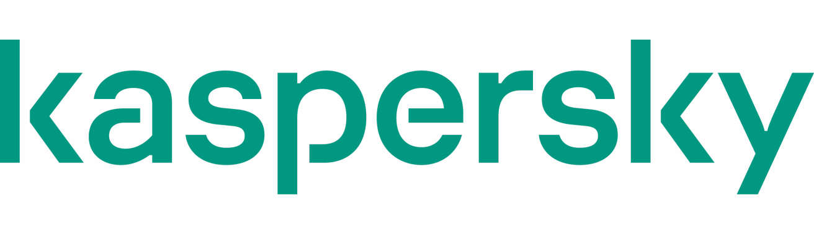
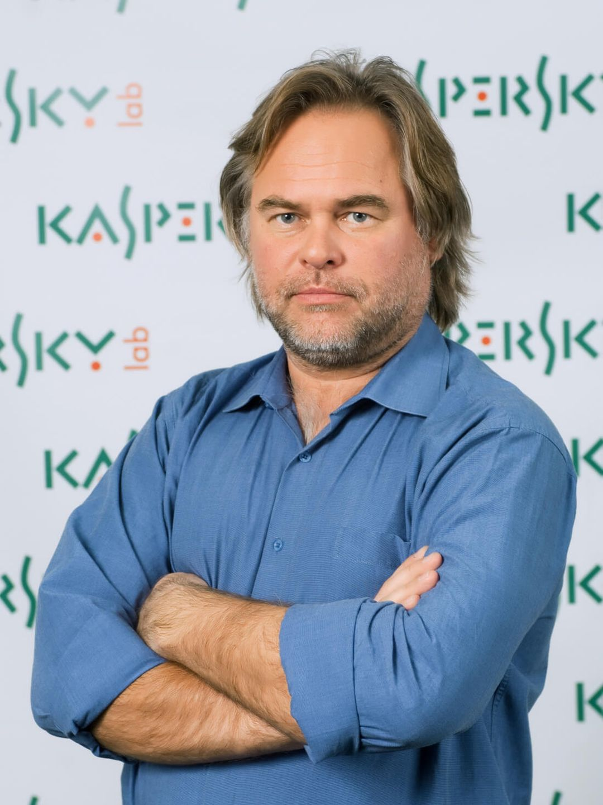

Карьера
Начало карьеры
В 1987 году Евгений Касперский поступил на работу в многопрофильный научно-исследовательский институт при Министерстве обороны СССР. Именно здесь он начал изучать компьютерные вирусы — после того, как в 1989 году столкнулся с вирусом Cascade. Проанализировав код вируса, Евгений разработал специальную утилиту для его лечения и заинтересовался данной тематикой.
В 1991 году Евгений Касперский начал работать в Центре информационных технологий КАМИ, где возглавил небольшую группу специалистов, занимавшуюся разработкой антивирусных решений.
В ноябре 1992 года группа выпустила свой первый полноценный продукт — AVP 1.0. В 1994 году он одержал победу в сравнительном тестировании, проведённом тестовой лабораторией Гамбургского университета[11]. Это обеспечило продукту международную известность, и разработчики начали лицензировать свои технологии зарубежным IT-компаниям. В 1997 году Касперский и его коллеги приняли решение создать собственную компанию, выступив в качестве соучредителей «Лаборатории Касперского». Евгений не хотел, чтобы в названии компании фигурировала его фамилия[12], но его переубедила жена Наталья Касперская, также вошедшая в число соучредителей компании. В ноябре 2000 года продукт AVP был переименован в Антивирус Касперского[8].
Развитие карьеры
Касперский руководил антивирусными исследованиями в компании со дня её основания по 2007 год, когда он занял пост генерального директора «Лаборатории Касперского».
Офис Касперского находится в новом бизнес-центре на Ленинградском шоссе[13]. Рабочий кабинет Евгения Касперского находится на одном этаже с ведущими разработчиками и аналитиками компании, рядом с Глобальным центром исследований «Лаборатории Касперского» (GReAT). Евгений является соавтором нескольких патентов в сфере информационной безопасности, в том числе патента на ограничительно-атрибутную систему безопасности, контролирующую взаимодействие компонентов ПО[14]. Этот патент выдан на технологию, лежащую в основе разрабатываемой в настоящее время «Лабораторией Касперского» безопасной операционной системы. Касперский — один из ведущих мировых специалистов в области защиты от вирусов. Он является автором большого числа статей и обзоров по проблеме компьютерной вирусологии, регулярно выступает на специализированных семинарах и конференциях в России и за рубежом. Касперский — член Организации исследователей компьютерных вирусов (CARO), которая объединяет экспертов в этой области[7]. Касперский является основателем конференции Virus Bulletin, которая с 2001 года ежегодно проводится в антивирусной индустрии. В 2012 году Касперский вошёл в рейтинг 100 самых влиятельных мыслителей года по версии журнала Foreign Policy и занял 40 место[15]. В декабре 2012 года американский журнал Wired поместил Касперского на 8-е место в списке «самых опасных людей в мире» — за разоблачение американского кибероружия, созданного для шпионажа на Ближнем Востоке и срыва иранской ядерной программы[16][17].
Проблемы 
Компания столкнулась с геополитическими проблемами, в частности в 2017 году, когда правительство США запретило её программное обеспечение из-за предполагаемых связей с российским правительством, что Касперский отрицал. В июне 2023 года компания сообщила о кибератаке, направленной на айфоны её руководящего состава[29]. В июне 2024 года, после очередных санкций США, компания ушла с американского рынка, позже заменив своё программное обеспечение на системах американских пользователей на UltraAV[30]. Несмотря на эти проблемы, «Лаборатория Касперского» сохраняет присутствие в Европе, Азии, на Ближнем Востоке и в Латинской Америке[31][32].
Eugene Kaspersky has been vocal for several years about the threat of a cyberattack on critical infrastructure, which could have catastrophic consequences. He supports the idea of a non-proliferation agreement, believing that the global community must put an end to the cyber arms race.